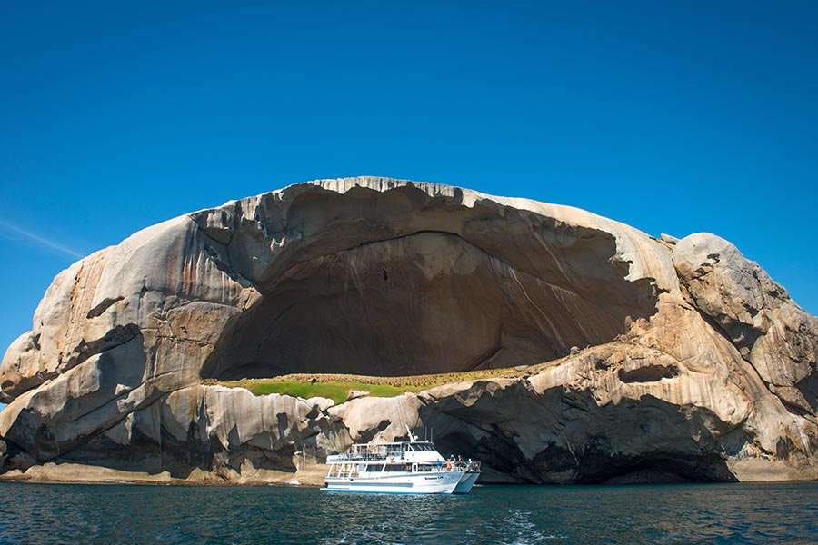
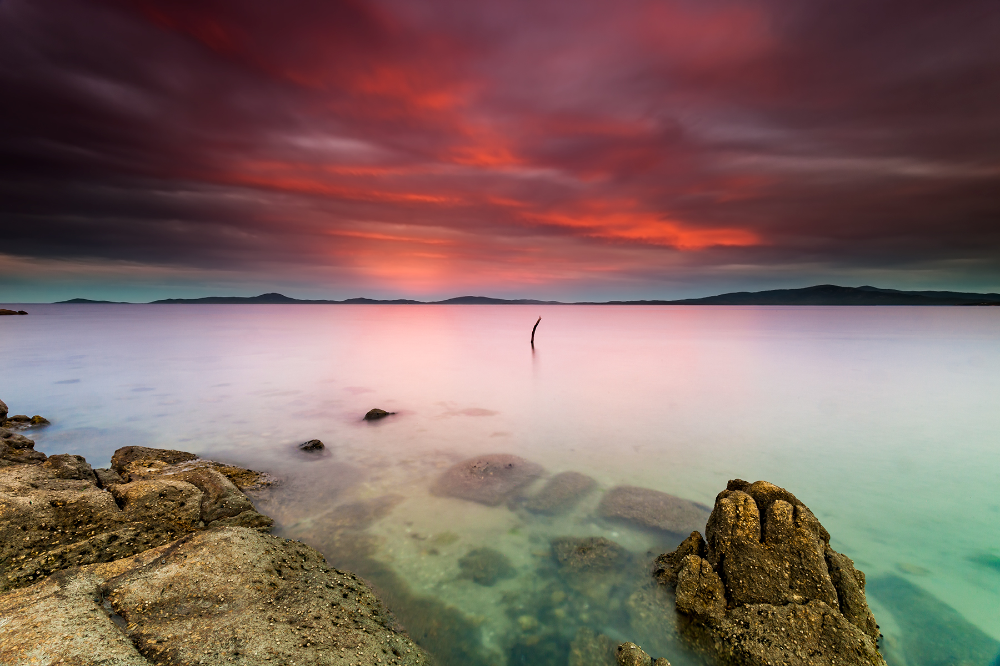
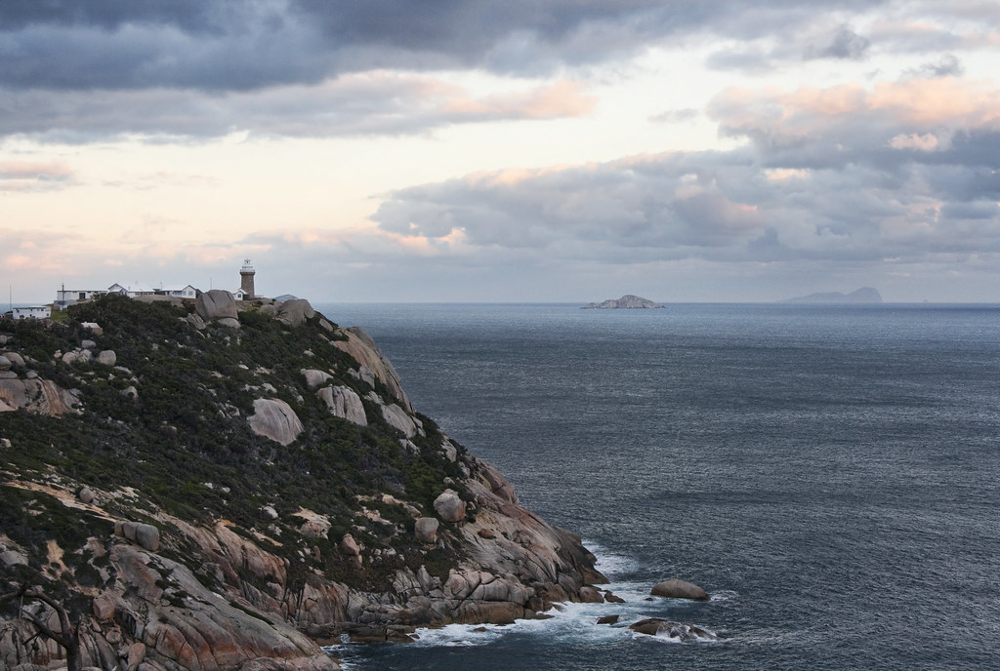

观鲸体验

传说中的‘骷髅岛’

冬天极光时刻

崖边灯塔

Wilsons prom
Wilsons Promontory位于墨尔本以南，是一个美丽的自然保护区，拥有许多令人惊叹的景点和活动。如果你计划前往那里，确实推荐安排至少两天的时间来充分体验这里的美景和活动。
地理位置
Wilsons Promontory位于澳大利亚维多利亚州的东南部，距离墨尔本市约230公里，是大洋路沿线的一部分。这个自然保护区坐落在吉普斯兰半岛的南端，被称为“威尔逊斯普罗蒙托里”或简称“威尔逊斯普罗”。 由于其壮观的自然景观、迷人的海滩和丰富的野生动植物，它吸引了许多游客前往探索和享受大自然的美丽。
- 徒步旅行和步道探险： 这里有各种难度和长度的徒步路线，适合不同级别的徒步者。其中最著名的是挑战性较高的南端挑战步道（Southern Circuit）和更为平缓的威尔逊斯峰步道（Mount Wilson Circuit）。
- 海滩和海岸线探索： 这里是澳大利亚野生动植物的家园，你可以看到袋鼠、袋熊和各种鸟类。在傍晚时分，还有机会看到袋鼠在草地上活动。
- 野生动物观察：这里是澳大利亚野生动植物的家园，你可以看到袋鼠、袋熊和各种鸟类。在傍晚时分，还有机会看到袋鼠在草地上活动。
- 露营和露天活动： 在Wilsons Promontory有多个露营地点可供选择，适合想要与自然亲密接触的人们。此外，还可以进行钓鱼、皮划艇和潜水等活动。
- 观景点和自然奇观： 例如高地（The Promontory）和奥伯伦山（Mt Oberon），这些地方提供了俯瞰整个保护区壮丽景色的机会。
因此，如果你希望充分享受Wilsons Promontory的自然美景和多样的户外活动，建议安排至少两天的时间。这样可以更轻松地探索多个景点，享受大自然的魅力，同时还能有充裕的时间放松和欣赏这里的景色。